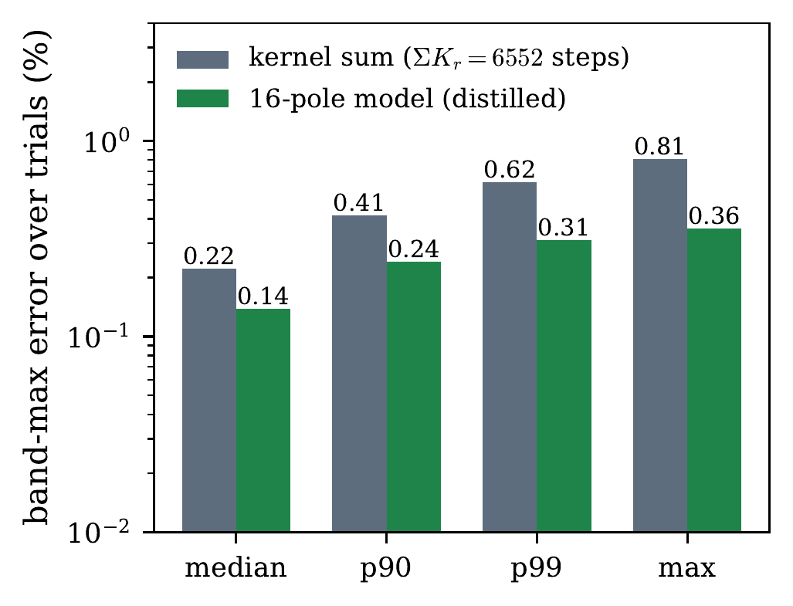

Preprint · July 2026
Policy Evaluation Across Discount Factors
In reinforcement learning, evaluating a policy does not give one number, it gives a curve: the policy’s value depends on the discount factor γ, and the effective horizon that γ encodes is a modeling choice that practice sweeps across decades. Existing quantum approaches to this problem are per-query: each new discount, each new task, and each later re-analysis consumes a fresh full-depth circuit.
This paper’s protocol instead makes one fixed set of quantum walk-operator measurements, on a logarithmic ladder of discount rungs, and post-processes it classically into a reusable model, the atlas of the title: a compact 16-pole macromodel per rung. From that single measured artifact, the entire value–discount curve, every reweighting of a 16-task register, and any later re-analysis are read off classically at no additional quantum cost, with the exact γ = 1 pole giving the average-reward gain term directly.
DistillationThe distilled 16-pole model is more accurate than the 6,552-step Chebyshev estimator it compresses (0.14% vs 0.22% median under identical noise): 410× compression at negative accuracy cost.Compression lawThe measured model-order law K* ∝ H0.505 matches the √H Bernstein count across four decades of horizon on a 3,600-state bottlenecked chain (0.044% noiseless, 0.0037% on a 16-task register, 0.14% median under per-moment noise, error decreasing with depth).Break-evenOne curve on the band is 41 queries; one acquisition of the 16-task register is 656. The atlas amortizes past Q* ≈ 8×102 queries at the seed transform constant (≈5×104, i.e. ≈76 register acquisitions, at the constant realized here); past break-even the per-query cost exceeds the atlas’s by the unbounded ratio Q/Q*.On hardwareA two-run study on ibm_fez: deep circuits locate the device’s decoherence wall near 500 routed two-qubit gates and validate the noise model’s variance at shot level; a shallow two-state instance performs genuine spectroscopy (all ten moment orders informative), reconstructing its value curve to 14% blind and, under a truth-referenced two-parameter calibration (validation-only), to 0.19%, at the 0.12% truncation floor.
Policy evaluation in reinforcement learning is a curve, not a number: a policy’s value depends on the discount γ, whose horizon H = 1/(1 − γ) practice sweeps across decades. Quantum estimators are per-query: each new discount, task, or re-analysis costs a full-depth circuit. We instead measure Chebyshev moments of the symmetrized walk operator once, on a logarithmic ladder of discount rungs, and post-process them classically into a passive 16-pole macromodel per rung: an atlas serving the entire value–discount curve, a 16-task register under any reweighting, and later re-analyses at no further quantum cost. A three-regime ledger prices the design at measured constants: against classical trajectories it keeps the full 1/ε estimation advantage and √H depth per circuit (total steps linear in H); against per-query methods it amortizes past Q* ≈ 8×102 queries (seed constant; 5×104 realized), under twenty curve sweeps; crossovers are reported in both directions. On a 3600-state bottlenecked chain, four decades of horizon reconstruct at 0.044% noiseless and 0.14% median under noise, error decreasing in depth; the kernel degree obeys a measured H0.505 law; the distilled model beats the 6,552-step estimator it compresses (410×, negative accuracy cost); ablations show every element necessary. Two runs on ibm_fez validate the measurement-and-estimation layer: deep circuits locate the decoherence wall near 500 routed two-qubit gates; a shallow instance reconstructs its value curve to 14% blind, 0.19% with validation-only calibration (0.12% truncation floor). This is a natural early-workload candidate for pre-fault-tolerant devices: shallow circuits, incoherent across shots, classical inversion. Limitations: the advantage-bearing experiments are classically simulated; sign-free reversible structure caps the speedup at quadratic; cost accounting is formula-level under the stated access model.
code/The three campaign scripts sharing a verbatim testbed constructor, plus the figure generator; all randomness pinned, archived results reproduce byte-for-byte.evidence/Protocol and quantitative accuracy criteria fixed prior to data collection, outcome ledgers, labeled amendments and repair addenda, machine-readable results.hardware/IBM hardware diagnostics notebook (blank and executed), both ibm_fez runs’ raw JSONs, and the reanalysis artifacts.@misc{ansari2026momentatlasrl,
title = {A Quantum Moment Atlas for Reinforcement Learning:
Policy Evaluation Across Discount Factors},
author = {Ansari, Kamran},
year = {2026},
note = {arXiv preprint; identifier to be added}
}